공조냉동기계산업기사 (2007-05-13 기출문제)
1과목: 공기조화
1. 공기조화 방식의 특징 중 공기 - 물 방식(유닛병용식)에 해당하는 것은?
- 환기(리턴) 휀을 설치하면 외기냉방이 가능하다.
- 유닛 1대로서 1개의 소규모 조운을 구성하므로 조우닝이 용이하다.
- 덕트가 없으므로 덕트 스페이스가 필요하지 않다.
- 개별식이므로 부분운전 및 시간차 운전에 적합하다.
(정답률: 60%)

2. 다음의 공기조화 방식중에 에너지가 가장 많이 소모되는 것은?
- 팩키지유니트 방식
- 가변풍량방식(VAV)
- 단일덕트방식
- 2중덕트방식
(정답률: 78%)
3. 건구온도 5℃(습구온도 2.5℃)의 공기 10m3/h을 건구온도 20℃까지 가열할 때 필요한 열량은 얼마인가? (단, 5℃일 때 엔탈피는 3.2kcal/kg 이고, 20℃의 엔탈피는 7kcal/kg 이다.)
- 9.1kcal/h
- 10.91kcal/h
- 22.31kcal/h
- 45.61kcal/h
(정답률: 27%)
4. 다음 그림은 냉방시의 공기조화 과정을 나타내고 있다. 그림과 같은 조건일 경우 냉각코일의 바이패스 팩터는 얼마인가? (단, ① 실내공기의 상태점, ② 외기의 상태점, ③ 혼합공기의 상태점, ④\ 취출공기의 상태점, ⑤ 코일의 장치노점온도)
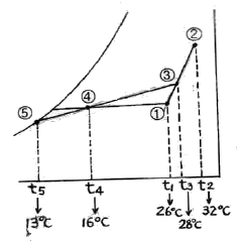
- 0.15
- 0.20
- 0.25
- 0.30
(정답률: 71%)
5. 다음 복사난방 중 시공이 쉬워 널리 사용되지만 표면 온도를 30℃이상 올리기 곤란하므로 면적이 크게 되는 것은?
- 천정패널
- 바닥패널
- 벽패널
- 코일패널
(정답률: 77%)
6. 다음 항목 중 실내 취득 냉방부하가 아닌 것은?
- 재열부하
- 벽체의 축열부하
- 극간풍에 의한 부하
- 유리창의 복사열에 의한 부하
(정답률: 73%)
7. 먼지의 포집효율의 측정법에서 필터의 상류와 하류에서 흡입한 공기를 각각 여과지에 통과시켜 그 오염도를 광전관으로 특정하는 것은?
- 중량법
- 계수법
- 비색법
- DOP법
(정답률: 51%)
8. 다음 중 원심송풍기에서 사용되는 풍량제어 방법 중 풍량과 소요 동력과의 관계에서 가장 효과적인 제어 방법은?
- 회전수 제어
- 베인 제어
- 댐퍼 제어
- 스크롤 댐퍼 제어
(정답률: 79%)
9. 보일러 1마력의 상당 증발량은 몇 kg/h 인가?
- 12.65
- 13.25
- 15.65
- 17.25
(정답률: 62%)
10. 같은 크기의 다른 보일러에 비해 전열면적이 크고 증기 발생이 빠르며, 고압증기를 만들기 쉬워 대용량의 보일러로서 가장 적당한 것은?
- 입형 보일러
- 수관 보일러
- 노통 보일러
- 관류 보일러
(정답률: 54%)
11. 다음 설명 중 틀린 것은?
- 고속 및 저속덕트의 구분기준 풍속은 15m/s이다.
- 등속법이란 덕트내의 풍속을 일정하게 하여 덕트치수를 결정하는 방법이다.
- 파이버글라스 덕트는 내압 70mmAq 이상에서 사용한다.
- 아연도금 철판덕트는 부식의 우려가 있고, 흡음성도 떨어진다.
(정답률: 45%)
12. 대기압 760mmHg의 상태에서 어떤 실내공기의 온도가 30℃이다. 이 공기의 수증기 분압이 40.08mmHg일 때 건공기의 분압은 얼마인가?
- 760mmHg
- 719.92mmHg
- 727.46mmHg
- 717.82mmHg
(정답률: 51%)
13. 유량 1500m3/h, 양정이 12m인 펌프의 축동력(kW)은 약 얼마인가? (단, 물의 비중량 kg/m3, 펌프 효율 η=0.7이다.)
- 12.1kW
- 14.2kW
- 38.5kW
- 70.1kW
(정답률: 28%)
14. 각 틍에 있는 패키지 공조기(PAC)로 냉온풍을 만들어 덕트를 통해 각실로 송풍하는 방식은?
- 2중 덕트 방식
- 각층 유닛 방식
- 팬코일 유닛 방식
- 덕트병용 패키지 방식
(정답률: 53%)
15. 다음의 냉방부하 중에서 현열부하와 잠열부하를 모두 포함하고 있는 것은?
- 벽체로부터의 취득열량
- 송풍기로부터의 취득열량
- 재열기의 취득열량
- 극간풍에 의한 취득열량
(정답률: 65%)
16. 지역난방의 특징 설명으로 잘못된 것은?
- 연료비는 절감되나 열효율이 낮고 인건비가 증가된다.
- 개별건물의 보일러실 및 굴뚝이 불필요하므로 건물이용의 효용이 높다.
- 설비의 합리화로 대기오염이 적다.
- 적절하고 합리적인 난방운전으로 열의 손실이 적다.
(정답률: 82%)
17. 다음 중 보일러의 능력과 효율을 표시하는 방법이 아닌 것은?
- 열발생률
- 전열면적
- 증발량
- 보일러 중량
(정답률: 80%)
18. 변풍량 방식에서 변풍량 유닛을 설명한 것으로 틀린 것은?
- 바이패스형은 송풍공기중 취출구를 통해 실내에 취출되고 남은 공기를 천장내를 통하여 환기덕트로 되돌려 보낸다.
- 유인형은 실매공기인 2차공기의 분출에 의해 공조기에서 오는 1차공기를 유인하여 취출한다.
- 슬록형은 부하의 감소에 따라 교축기구에 의해 풍량을 조절한다.
- 슬롯형은 덕트의 정압변화에 대응할 수 있는 정압제어가 필요하다.
(정답률: 65%)
19. 다음의 덕트 중 보온을 필요로 하는 것은?
- 보온효과가 있는 흡음재를 부착한 덕트 및 챔버
- 공조가 되고 있는 실 및 그 천장 속의 환기 덕트
- 외기 도입용 덕트
- 급기 덕트
(정답률: 48%)
20. 날개차 직경이 450mm인 다익형 송풍기의 호칭(번)은 얼마인가?
- 1번
- 2번
- 3번
- 4번
(정답률: 78%)
2과목: 냉동공학
21. 다음 중 암모니아냉매의 특성이 아닌 것은?
- 수분을 함유한 암모니아는 구리와 그 합금을 부식시킨다.
- 대규모 냉동장치에 널리 사용되고 있다.
- 초저온을 요하는 냉동에 사용된다.
- 독성이 강하고 강한 자극성을 가지고 있다.
(정답률: 70%)
22. 암모니아 냉동기에서 암모니아가 새고 있는 장소에 붉은 리트머스 시험지를 대면 어떤 색으로 변하는가?
- 황색
- 다갈색
- 청색
- 홍색
(정답률: 79%)
23. 염화칼슘 브라인의 공정점(共晶店)은?
- -15℃
- -21℃
- -33.6℃
- -55℃
(정답률: 77%)
24. 냉매의 구비조건을 나타낸 것이 아닌 것은?
- 증발압력은 대기압보다 약간 높은 것이 좋고, 응축압력은 낮은 것이 좋다.
- 증발 잠열과 기체의 비열은 작고 비열비는 커야 한다.
- 장치를 침식하지 않으며 절연 내력이 커야 한다.
- 점도와 표면장력은 작아야 한다.
(정답률: 62%)
25. 실제 냉동싸이클을 이상적인 냉동싸이클과 비교할 때 다른점이 아닌 것은?
- 냉매가 관내를 흐를 때 마찰에 의한 압력강하가 있다.
- 외브와의 다소의 열 출입이 있다.
- 냉매가 압축기의 밸브를 지날 때 다소의 교축작용이 행해진다.
- 압축기에 의한 압축은 등엔트로피 변화이다.
(정답률: 59%)
26. 냉동기의 성적계수가 6.84 일 때 증발온도가 -13℃ 이다. 응축온도는 약 얼마인가?
- 15℃
- 20℃
- 25℃
- 30℃
(정답률: 48%)
27. 다음은 스크류 냉동기의 특징을 설면한 것이다. 맞지 않는 것은?
- 경부하시에는 비교적 동력 소모가 적다.
- 크랭크사프트, 피스톤링, 컨넥링로드 등의 마모부분이 없어 고장이 적다.
- 소형으로서 비교적 큰 냉동능력을 발휘할 수 있다.
- 회전식이라도 단단에서도 높은 압축비까지 운전할 수 있다.
(정답률: 57%)
28. 암모니아 냉동기에서 유 분리기의 설치 위치로 가장 적당한 곳은?
- 압축기과 응축기 사이
- 응축기와 팽창변 사이
- 증발기와 압축기 사이
- 팽창변와 증발기 사이
(정답률: 73%)
29. 기통직경 70mm, 행정 60mm, 기통수 8, 매분회전수 1800 인 단단 압축기의 피스톤 압출량은 약 얼마인가?
- 165m3/h
- 172m3/h
- 188m3/h
- 199m3/h
(정답률: 45%)
30. 다음 그림은 역카르노사이클을 절대온도(T)와 엔트로피(S) 좌표로 나태내었다. 면적(1-2-2‘-1’)이 나타내는 것은?
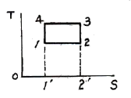
- 저열원으로 부터 받는 열량
- 고 열원에 방출하는 열량
- 냉도기에 공급된 열량
- 고 저 열원으로 부터 나가는 열량
(정답률: 70%)
31. 수냉식 응축기의 능력을 증가시키는 방법에 대한 설명 중 틀린 것은?
- 냉각수량을 늘린다.
- 냉각수온을 낮춘다.
- 응축기 코일을 세척한다.
- 표면적을 줄인다.
(정답률: 67%)
32. 응축기에 대한 설명 중 맞는 것은?
- 수냉식 응축기는 냉각관의 두께에 비례하여 전열작용이 좋아진다.
- 증발식 응축기에서 응축온도는 외기의 건구온도보다 습구온도의 영향을 많이 받는다.
- 공냉식 응축기는 대기오염의 영향을 받지 않으므로 프레온 냉매틑 물론 암모니아 냉매에도 사용한다.
- 응축기에서는 고온, 고압의 냉매가스가 액화하기 때문에 잠열만을 외부로 방출한다.
(정답률: 59%)
33. 수증기를 열원으로 하여 냉방에 적용시킬 수 있는 냉동기는 어느 것이 있는가?
- 원심식 냉동기
- 왕복식 냉동기
- 흡수식 냉동기
- 터보식 냉동기
(정답률: 79%)
34. 얼음과 식염의 혼합에 의하여 냉동력을 얻는 방법이 있다. 이와 같은 물질을 무엇이라 하는가?
- 냉매
- 흡수제
- 기한제
- 첨가제
(정답률: 76%)
35. 냉장고용 냉매로 사용되던 R-12의 대체냉매로 사용되는 냉매는?
- R-11
- R-123
- R-503
- R-134a
(정답률: 54%)
36. R-13 냉매의 분자량은 104.47 이다. R-13냉매 증기의 가스정수 R(kgㆍm/kgㆍK)은 얼마인가?
- 8.117
- 5.117
- 3.123
- 1.241
(정답률: 30%)
37. 정압식 팽창 밸브는 무엇에 의하여 작동하는가?
- 응축 압력
- 증발기의 냉매 과열도
- 응축 온도
- 증발 압력
(정답률: 59%)
38. 응축압력이 현저하게 상승한 원인으로 옳은 것은?
- 증발기의 능력이 저하되었다.
- 액백(Liquid back)현상이 일어나 압축기가 습압축을 하였다.
- 수냉식일 경우 냉각수량이 증가하였다.
- 유분리기의 기능이 불량하고 응축기에 물때가 많이 부착되어 있다.
(정답률: 68%)
39. 10℃ 이상기체를 등압하에서 100℃까지 팽창시키면 이 시체의 비중량은 처음의 약 몇 배가 되는가?
- 10
- 2.53
- 1.42
- 0.76
(정답률: 35%)
40. 2원 냉동방식에서 안전장치로서 냉동기 정지시 초저온 냉매의 증발로 인한 압력의 상승을 방지할 수 있는 것은?
- 카스케이드 콘덴서
- 팽창 탱크
- 중간 냉각기
- 바이패스 밸브
(정답률: 41%)
3과목: 배관일반
41. 냉동용 그림기호
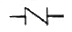
는 무슨 밸브인가?- 체크 밸브
- 글로브 밸브
- 슬루스 밸브
- 앵글 밸브
(정답률: 85%)
42. 대구경, 소구경 경질염화비닐관의 용접 접합시 사용되는 용접기는?
- 압축 용접기
- 사소 아세틸렌 용접기
- 열풍 용접기
- TIG 용접기
(정답률: 47%)
43. 순환식(2관식) 급탕배관의 장점은?
- 연료비가 적게 든다.
- 항시 온수를 사용할 수 있다.
- 보일러의 압력이 낮아도 된다.
- 배관이 간단하다.
(정답률: 60%)
44. 스케줄 번호에 의해 두께를 나타내는 관이 아닌 것은?
- 수도용 아연도금 강관
- 압력배관용 탄소강관
- 고압 배관용 탄소강관
- 배관용 스테인리스 강관
(정답률: 66%)
45. 동관 접합법에 해당 되지 않는 것은?
- 납땜 접합
- 용접 접합
- 플레어 접합
- 나사 접합
(정답률: 68%)
46. 게이트 밸브(G.V)라고도하며 유체 흐름의 개폐용으로 사용하는 대표적인 밸브는?
- 다이아프램 밸브
- 콕
- 글로브 밸브
- 슬루스 밸브
(정답률: 57%)
47. 증기를 직접 불어 넣어 가열하는 방식으로 소음을 줄이기 위해 사용하는 급탕설비는?
- 안전밸브
- 스팀 사일렌서
- 응축수 트랩
- 가열코일
(정답률: 74%)
48. 고온수 난방의 온수 온도로 적당한 것은?
- 30~40℃
- 100~150℃
- 300~350℃
- 450~500℃
(정답률: 69%)
49. 다음은 송풍기와 덕트(duct)의 연결방식을 나열한 것이다. 올바르게 된 것은? (단, 송풍기 :
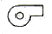
덕트 : )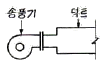
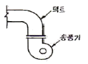
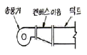
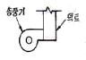
(정답률: 67%)
50. 보온재의 구비조건으로 틀린 것은?
- 열전달률이 클 것
- 물리적, 화학적 강도가 클 것
- 흡수성이 적고 가공이 용이할 것
- 불연성일 것
(정답률: 81%)
51. 다음 중 보온을 하지 않아도 되는 배관은?
- 통기관
- 증기관
- 온수관
- 냉수관
(정답률: 71%)
52. 증기 관말 트랩 바이패스 설치시 필요없는 부속은?
- 엘보
- 유니온
- 글로브 밸브
- 안전밸브
(정답률: 64%)
53. 회전운동을 링크기구에 의한 왕복운동으로 바꾸어서 제어밸브를 개폐하는 밸브는?
- 전자 밸브
- 전동 밸브
- 감압 밸브
- 체크 밸브
(정답률: 44%)
54. 플로트 트랩의 특징이 아닌 것은?
- 항상 응축수가 생기는 대로 배출되므로 최대의 열효율을 요구하는 곳에 적합하다.
- 자동 에어벤트가 내장되어 있으므로 공기 배출 능력이 뛰어나다.
- 고압에서도 사용이 가능하며 견고하고 수격작용에도 강하다.
- 동파의 위험이 있으므로 외부에 설치 할 때는 보온해야 한다.
(정답률: 43%)
55. 다음 중 각 기구 또는 밸브별 최저 필요수압이 가장 작은 것은?
- 샤워
- 자동밸브
- 세정밸브
- 저압용 순간 온수기(소)
(정답률: 58%)
56. 동관을 납땜이음으로 배관하다가 긑에 숫나사가 달린 수도꼭지를 설치하기 위하여 엘보를 사용하려고 한다. 여기에 사용되는 엘보의 기호로 올바른 것은?
- Ftg×C
- C×M
- M×F
- C×F
(정답률: 47%)
57. 배관길이 200m, 관경 100mm 의 배관 내 20℃의 물을 80℃로 상승 시킬 경우 배관의 신축량은? (단, 강관의 성팽창계수는 12.5×10<sup>-6</sup>/℃ 이다.)
- 10cm
- 15cm
- 20cm
- 25cm
(정답률: 49%)
58. 고가탱크 급수방식의 특징이 아닌 것은?
- 탱크는 고압으로 제작되어야 하기 때문에 비싸다.
- 항상 일정한 수압으로 급수 할 수 있다.
- 저수량을 언제나 확보할 수 있으므로 단수가 되지 않는다.
- 수압 과대로 인한 밸브류 등 배관 부속품의 피해가 적다.
(정답률: 48%)
59. 온수배관을 시공할 때 고려해야 할 사항으로 짝지어진 설명이 옳지 않은 것은?
- 열에 의핸 배관의 신축 - 신축이음
- 온도차에 의한 물의 자연순환 - 순환펌프
- 열에 의한 온수의 체적팽창 - 팽창관
- 혼입된 공기에 의한 설비의 장애 - 공기빼기밸브
(정답률: 59%)
60. 냉매배관에서 가스 균압관이 설치되는 기기는?
- 냉각탑
- 응축기
- 유분리기
- 팽창밸버
(정답률: 47%)
4과목: 전기제어공학
61. 유도전동기의 고정손에 해당하지 않는 것은?
- 1차권선의 저항손
- 철손
- 베어링 마찰손
- 풍손
(정답률: 64%)
62. 그림과 같은 게이트회로에서 출력 Y는?
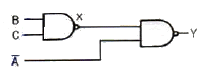
- B+AㆍC
- A+BㆍC
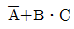
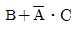
(정답률: 56%)
63. 컴퓨터실의 온도를 항상 18℃로 유지하기 위하여 자동 냉난방기를 설치하였다. 이 자동 냉난방기의 제어는?
- 정치제어
- 추종제어
- 비율제어
- 서보제어
(정답률: 73%)
64. 보일러의 온도를 70℃로 일정하게 유지시키기 위하여 기름의 공급을 변화시킬 때 목표값은 어떤 것인가?
- 70℃
- 온도
- 기름 공급량
- 보일러
(정답률: 60%)
65. 옴의 법칙에서 전류의 세기는 어느 것에 비례하는가?
- 저항
- 동선의 길이
- 동선의 지름
- 전압
(정답률: 75%)
66. 단상전파정류로 직류전압 48V를 얻으려면 변압기 2차권선의 상전압 Vs는 약 몇 [V] 인가? (단, 부하는 무유도저항이고, 정류회로 및 변압기에서의 잔압강하는 무시한다.)
- 43
- 53
- 58
- 65
(정답률: 44%)
67. 평형 3상 Y결선에서 상전압 Es와 선간전압 EL과의 관계는?
- EL=ES
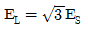
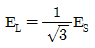
- EL=3ES
(정답률: 54%)
68. 유도전동기의 1차전압 변화에 의한 속도제어시 SCR을 사용하여 변화시키는 것은?
- 주파수
- 토크
- 위상각
- 전류
(정답률: 62%)
69. 다음 중 유도전동기의 회전력에 관하 설명으로 옳은 것은?
- 단자전압과는 무관하다.
- 단자전압에 비례한다.
- 단자전압의 2승에 비례한다.
- 단자전압의 3승에 비례한다.
(정답률: 68%)
70. 시퀀스 제어에 관한 설명 중 옳지 않은 것은?
- 조합 논리회로도 사용된다..
- 계통에 연결된 모든 스위치가 동시에 작동할 수도 있다
- 시간 지연요소도 사용된다.
- 제어 결과에 따라 조작이 자동적으로 이행된다.
(정답률: 71%)
71. 그림은 일반적인 반파정류회로이다. 변압기 2차 전압의 실효값을 E[V]라 할 때 직류전류의 평균값은? (단, 변류기의 전압강하는 무시한다.)
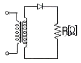
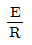
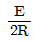
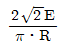
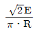
(정답률: 49%)
72. 그림과 같이 연결된 콘덴서릐 직렬회로에서 합성 정전 용량을 구하면 몇 [μF]인가?
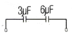
- 2
- 4
- 7
- 9
(정답률: 41%)
73. 제어계의 특성방정식이 s2+as+b=0 일 때 안전 조건은?
- a>0, b>0
- a=0, b<0
- a<0, b<0
- a>0, b<0
(정답률: 63%)
74. 피드백제어계에서 제어요소에 대한 설명으로 맞는 것은?
- 제어명령을 증폭시켜 제어요소로 활용한다.
- 목표값에 비례하는 신호를 발생하는 요소이다.
- 조작부와 검출부로 구성되어 진다.
- 동작신호를 조작량으로 변환하는 요소이고 조절부와 조작부로 이루어 진다.
(정답률: 65%)
75. 다음 중 PLC(Programmable Logic Controller)를 사용한 제어에서 CPU의 구성에 해당하지 않는 것은?
- 연산장치
- 프로그램 카운터
- 보조 기억장치
- 범용 레지스터
(정답률: 47%)
76. R, L, C 직렬회로에서 인가전압을 입력으로, 흐르는 전유를 출력으로 할 때 전달함수를 구하면?
- R+LS+CS
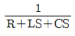
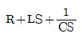
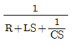
(정답률: 58%)
77. 다음 중 지시계측기의 구성요소와 거리가 먼 것은?
- 구동장치
- 제어장치
- 제동장치
- 유도장치
(정답률: 66%)
78. 동작 틈새가 가장 많은 조절계는?
- 2위치 동작
- 비례 동작
- 비례 미분 동작
- 비례 적분 동작
(정답률: 61%)
79. 반지름 1.5mm, 길이 2km인 도체의 저항이 32Ω이다. 이 도체가 지름이 6mm, 길이가 500m로 변할 경우 저항은 몇 [Ω]이 되는가?
- 1
- 2
- 3
- 4
(정답률: 50%)
80. 바리스터(Varistor)의 주된 용도에 해당되는 것은?
- 저항 증가에 대한 손실 보상
- 서지전압에 대한 회로 보호
- 고조파에 대한 온도 보상
- 압력에 대한 출력 증폭
(정답률: 68%)